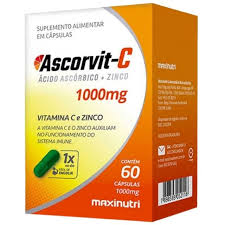
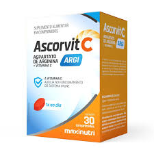

Vitaminas Imunidade

Lavitan C D Z S E
O Lavitan CDZSE é um suplemento alimentar da Cimed formulado para fortalecer o sistema imunológico e combater os radicais livres. A sigla refere-se à sua composição, que combina vitaminas e minerais com forte ação antioxidante
Consultar Valor
Ascorvit C
O Ascorvit C (da Maxinutri 30 ou 60 cp)é um suplemento alimentar em cápsulas que combina Vitamina C (1000 mg) e Zinco. Ele é indicado para fortalecer o sistema imunológico, combater os radicais livres com sua ação antioxidante e auxiliar na produção de colágeno
Consultar Valor
Ascorvit Argi
O Ascorvit Argi é um suplemento alimentar que combina Vitamina C (500 mg) e L-Arginina (283 mg). Ele serve para fortalecer o sistema imunológico, dar mais disposição física e melhorar a circulação.
Consultar ValorVitaminas Mulher

Centroliv Mulher
O Centroliv Mulher é um suplemento vitamínico e mineral desenvolvido para atender às necessidades nutricionais específicas do organismo feminino. Ele auxilia no metabolismo, fortalece o sistema imunológico e promove a saúde da pele, cabelos e unhas.
Consultar Valor
Maca Mulher
A maca mulher, geralmente feita a partir da variedade de maca peruana vermelha, é um suplemento natural em pó ou cápsula focado no público feminino. Ela é amplamente utilizada para aumentar a energia e a disposição, equilibrar os hormônios, melhorar a libido e aliviar sintomas da menopausa e da TPM.
Consultar Valor
Testo Vigor Woman
Testo Vigor Woman é um suplemento alimentar formulado com extratos naturais (como Feno-grego e Curcumina), vitaminas e minerais. Ele atua como um tônico e estimulante para melhorar a disposição, auxiliar no equilíbrio hormonal, combater a fadiga e potencializar a vitalidade e a libido feminina.
Consultar Valor
Polivitamínico Mulher Catarinense
O Polivitamínico Mulher da Catarinense Nutrição é um suplemento alimentar desenvolvido para atender as necessidades nutricionais do organismo feminino adulto. Ele contém uma fórmula rica em 21 vitaminas e minerais, como biotina, zinco e ferro, que auxiliam na imunidade, energia, e na saúde da pele, cabelos e unhas.
Consultar ValorVitaminas Cabelo e Unha

Gummy Hair
Conhecido por seu formato lúdico de coração, o produto substitui as cápsulas tradicionais por uma rotina de cuidados mais saborosa e prática.Sua fórmula exclusiva atua de dentro para fora, reunindo uma potente combinação de Biotina, Retinol (Vitamina A) e mais de 10 nutrientes essenciais. A recomendação padrão de consumo é de duas gominhas por dia.
Consultar Valor
Lavitan Cabelos e Unhas
O Lavitan Cabelos e Unhas é um suplemento vitamínico-mineral com fórmula rica em Biotina, Zinco, Selênio, Cromo e Vitamina B6. Desenvolvido para uso adulto, ele atua nutrindo o organismo de dentro para fora, auxiliando no combate à queda, estimulando o crescimento saudável dos fios e fortalecendo unhas quebradiças.
Consultar Valor
Cabelos e Unhas Catarinense
O Polivitamínico Cabelos e Unhas da Catarinense Nutrição é um suplemento formulado com biotina, zinco, selênio e vitaminas do complexo B. Ele atua na manutenção da saúde capilar, fortalecimento das unhas e proteção antioxidante da pele.
Consultar Valor